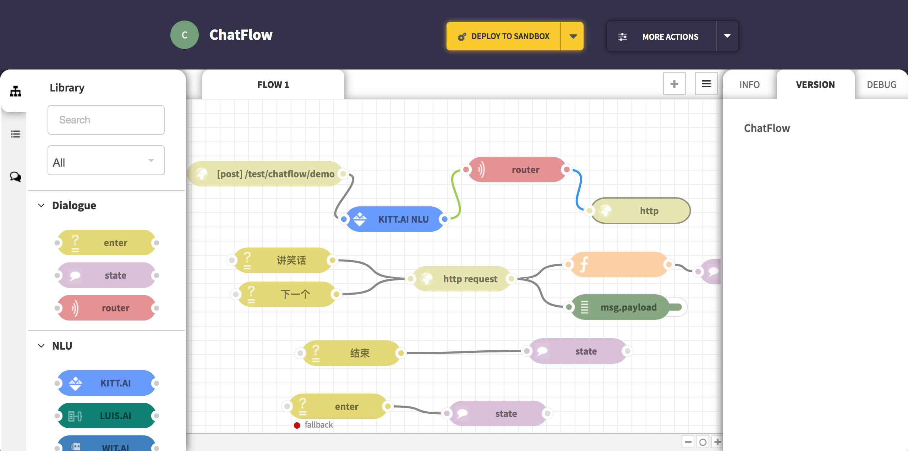
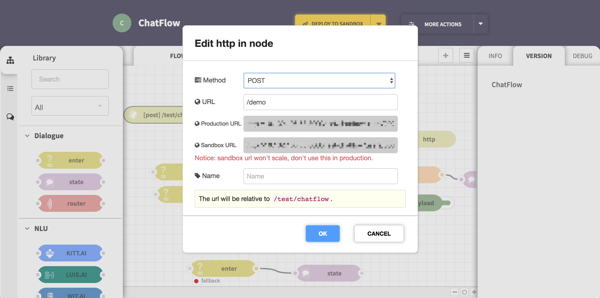
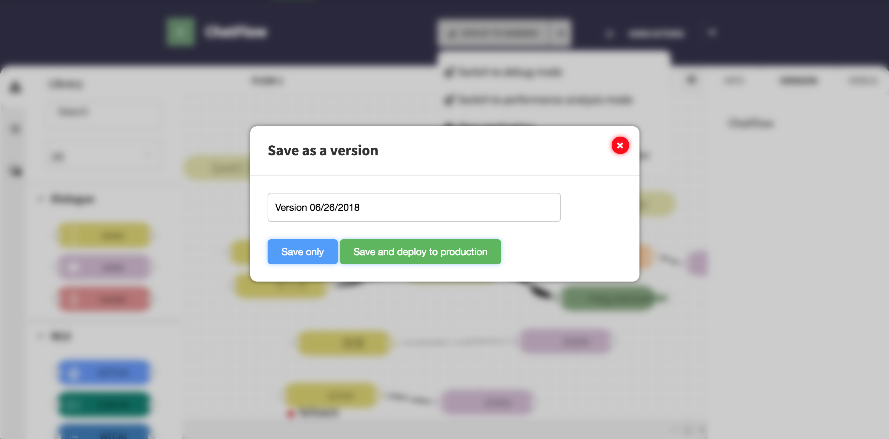
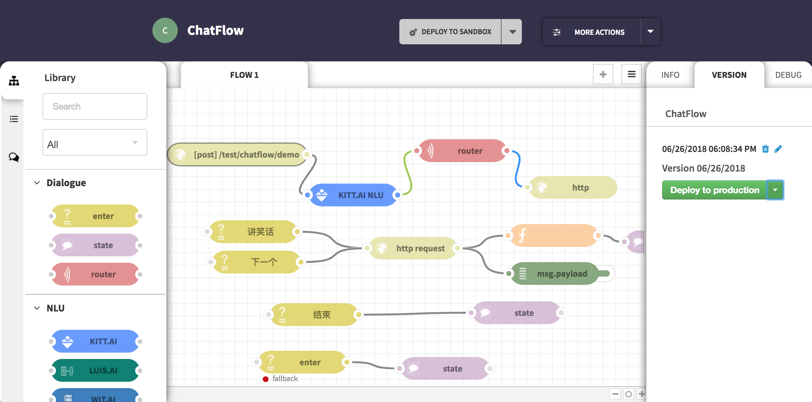
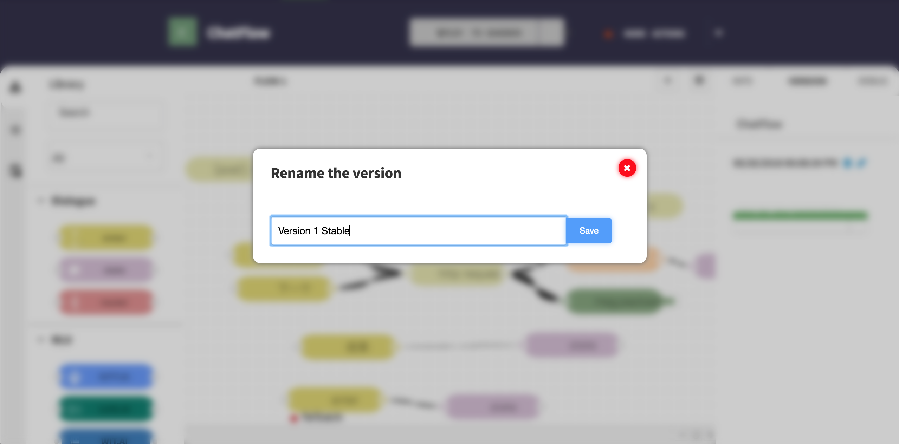
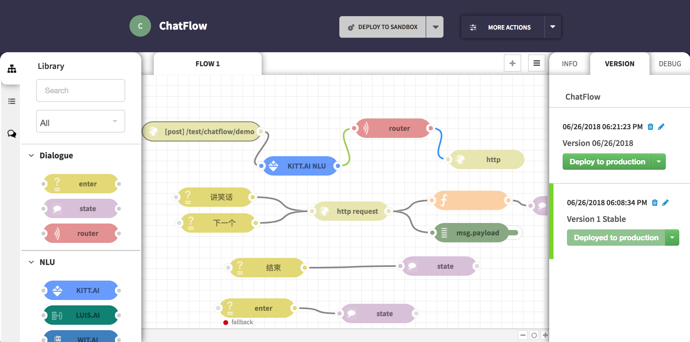

版本控制介绍¶
介绍¶
版本控制在企业版中开放，版本控制将部署环境分为**Sandbox**和**Production**环境。Deploy功能也被替换为Deploy to sandbox和Deploy to production。 不同的Deploy按钮将你的应用部署在不同的环境中，两个环境严格区分，并且用户不同的访问地址，方便调试和真实用户的区分。
在任何时候都可以将应用保存为一个版本（Save and optionally deploy to production），放在右边栏的Version列表中。每一个Version都可以进行重命名、删除、Deploy to production和Preview in editor操作。 通过重命名可以为指定版本设置一个直观的名称，例如Version 1.0。通过Preview in editor可以将指定版本拿到编辑区域进行编辑，注意任何修改都不会更改这个版本，再次保存版本会创建一个新的版本，或者直接Deploy to sandbox进行调试。 在版本稳定时，通过Deploy to production功能将版本部署到Production环境，注意你可以随时部署任何一个版本到Production，这意味着当部署了一个不稳定的版本后，你可以迅速还原之前的版本来达到Production的稳定。
- 在这篇教程结束之后可以：
- 部署Sandbox环境
- 保存一个版本
- 为一个版本自定义名称
- 基于一个版本部署Production环境
- 预览一个版本
部署Sandbox环境¶
进入任何一个具有Http In节点的应用（如果还没有应用，可以选择 讲笑话 ChatFlow json ）:
在企业版中，你将会看到这个醒目的黄色按钮：
点击DEPLOY TO SANDBOX后，应用即部署在Sandbox环境中，这时我们需要验证一下部署是否成功。 双击Http In节点可以看到这里有两个URL地址：Production URL和Sandbox URL
向Sandbox URL发送一条测试数据，然后再向Production URL发送一条测试数据，你会发现只有Sandbox URL地址是有效地址。
保存一个版本¶
点击DEPLOY TO SANDBOX右侧的下拉箭头，选择Save and optionally deploy to production按钮，你会看到下面的弹出框：
选择Save only只会保存当前的应用为一个版本，选择Save and deploy to production不仅会保存当前的应用为一个版本，还会自动将这个版本部署到Production。 在熟悉整个操作前，我们建议你点击Save only按钮。
保存后，在右侧侧边栏的Version列表中，会出现新保存的版本：
你可以拥有非常多的版本，这些版本不会影响任何环境，直到你部署某一个版本到Production。
为一个版本自定义名称¶
在版本列表中找到一个版本，点击版本右上角的编辑图标，在弹出框中输入例如这样的名称：
基于一个版本部署Production环境¶
在版本列表中找到一个版本，点击Deploy to production按钮，再次确认后即部署到Production上。 在版本列表中，被部署到Production环境中的版本会有特殊样式进行区分，并且不能被删除：
